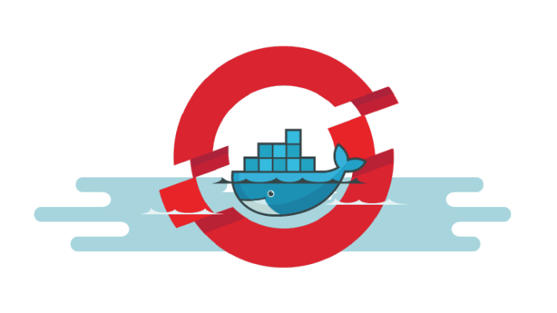
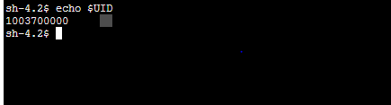
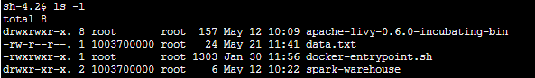
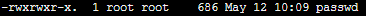

Understanding Permissions in Docker Containers

Many of us may have heard about Docker and containers being used in microservices architecture. The main advantage that containerization gives us is that many small apps can run as light-weight containers on the same OS and share resources. But, it is also important to understand how UIDs and GIDs map between the host kernel and containers in order to build a secure and mutually isolated system.
In this post we’ll talk about user and group permissions and how they vary in host nodes and the containers that run on top of them. This article will focus on container deployments done using Openshift which internally implements Kubernetes and Docker.
Prerequisite : If you are not familiar about user and group permissions and how they are defined please read this.
DockerFile vs docker-entrypoint.sh
When we run our build template with docker as our build strategy it looks for a Dockerfile in the path specified. This file builds our final image and runs with root permissions by default. This means it has read, write and execute on all files and folders in the system and it can also grant permissions to other users to access the file system.
For security and isolation purposes, the openshift container runs on a random UID by default and it is not the owner of any file in the filesystem. This implies that this UID will not have sensitive permissions like write on files. So, the container will fail to start if your entrypoint file tries to execute commands that modify files in the directory.

Container starts on random UID
Thus, Dockerfile needs to give the required permission on the filesystem to the entrypoint when the image is deployed for the container to start properly. But, we also need to be careful while assigning sensitive permissions to the container as we don’t want to expose any security vulnerabilities on the host kernel.
Context for the example used below
Recently, I was supposed to upgrade the Livy community image at my company. We were trying to remove the use of 777 permissions(anyone can read, write and execute) given before to a more secure one like 755 permission(except owner all UIDs have only read access). However, we still wanted our entrypoint to be able to make changes like whitelisting JAR paths in livy config files.
Here, I discovered how user IDs and group IDs are mapped differently in a host and container. The UIDs present in your container do not necessarily have a corresponding ID in the host system. This means that there will be no overlap of permissions between multiple containers as all have their unique set of UIDs. It also means that by default no container will be able to change files in the host kernel which is a very important aspect when all containers share the same resources.
Changes done in Dockerfile by giving required permissions
Here’s a sample build-template.yml file that uses docker strategy to build the image.
As an example, the Dockerfile below takes a spark base image and installs a livy client on top of it. It also specifies the entrypoint script to run which defines a setup that needs to be done for an image when it is deployed in a container.
The entrypoint script below is trying to make changes in livy.conf file for which it does not have sufficient permissions and the application will fail to start when deployed.
We need to change our Dockerfile to add the following lines which change the group of file and directory to be modified to root. We also need to give the root group a rwx permission on these folders.
RUN chgrp -R 0 ${USERHOME} && \
chmod -R ${USERHOME} && \
chmod -R /etc/passwd && \
find ${USERHOME} -type d -exec chmod g+x {} +
After modifying the Dockerfile we can see that our ${USERHOME} folder has root group which has rwx permissions on the directory. Hence, our entrypoint can run and modify required files and our container will start successfully.

Livy folder has root group and rwx permissions

passwd file has root group and rwx permissions
Conclusion
We saw that the container has a different UID than host in Openshift and how we can give appropriate permissions in our dockerfile to the container for it to start in a secure manner. I hope you find this post useful. Please feel free to correct me or ask questions in the comments below.
Related Links:
Giving Permissions to group
Article explaining UID and GID in docker containers
Assigning password to anonymous id
Permissions explained